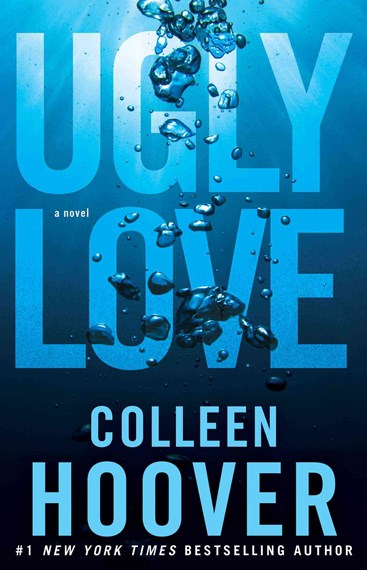

UGLY LOVE: By colleen Hoover
Ugly Love is a fiction romance novel published on the 5 August 2014.

Blurb:
When Tate Collins meets airline pilot Miles Archer, she knows it isn’t love at first sight. They wouldn’t even go so far as to consider themselves friends. The only thing Tate and Miles have in common is an undeniable mutual attraction. Once their desires are out in the open, they realize they have the perfect set-up. He doesn’t want love, she doesn’t have time for love, so that just leaves the sex. Their arrangement could be surprisingly seamless, as long as Tate can stick to the only two rules Miles has for her.
Never ask about the past.
Don’t expect a future.
They think they can handle it, but realize almost immediately they can’t handle it at all.
Hearts get infiltrated.
Promises get broken.
Rules get shattered.
Love gets ugly.
Retrieved from https://www.goodreads.com/book/show/17788401-ugly-love
Review
5 stars I loved this book. I really liked the writing style of this book and the fact that it had dual point of views. I liked the character development and the plot twist. I liked the time skip from when he was younger to when he was older. I liked themes this book addressed and they way the author characterised them. Overall I enjoyed reading this book.